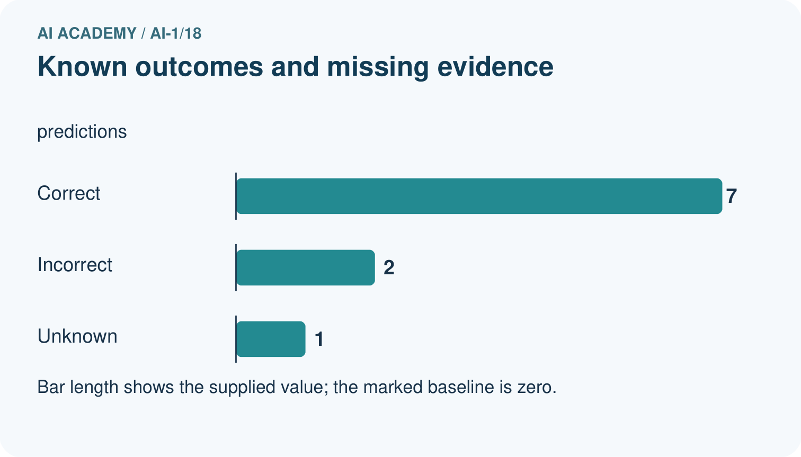
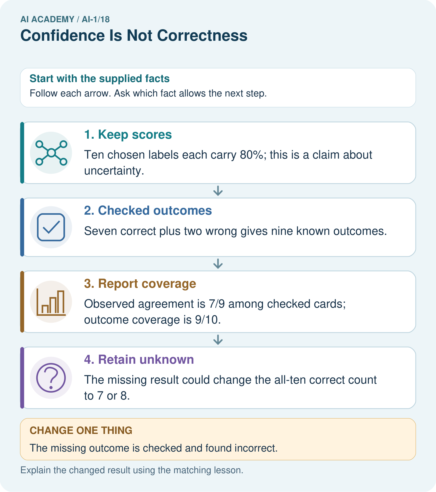
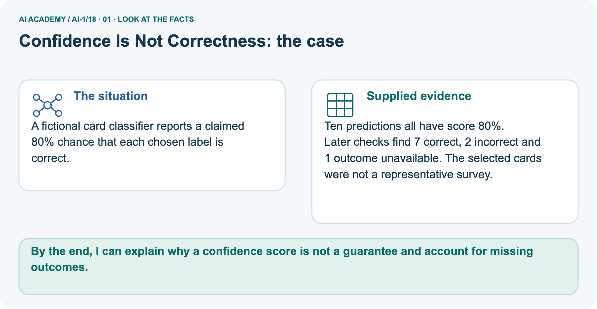
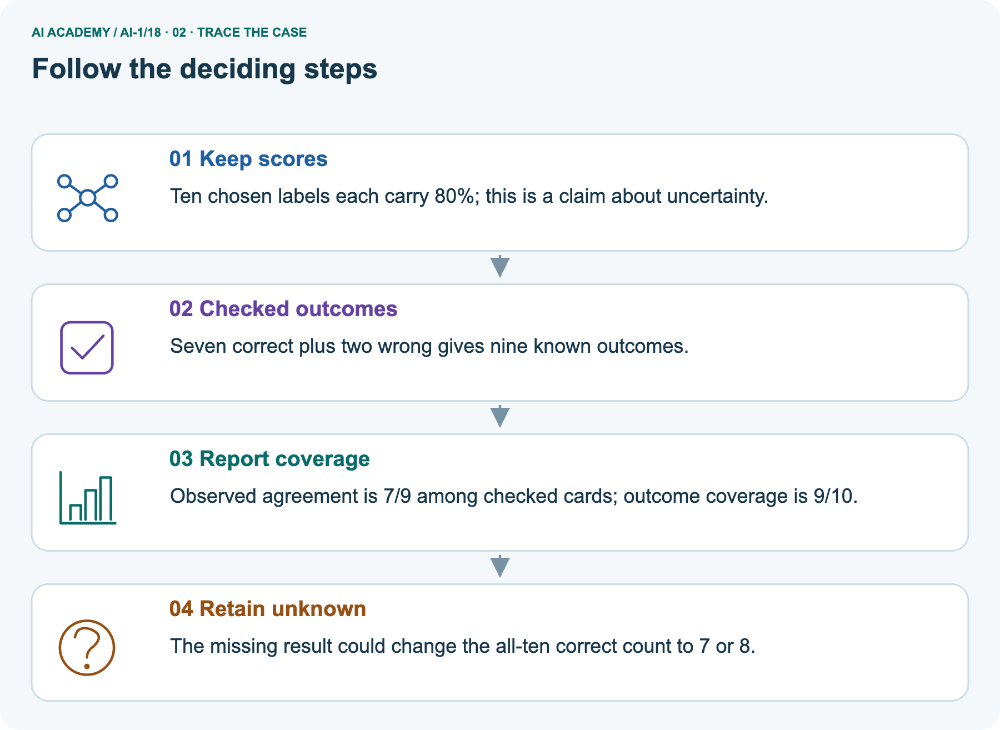
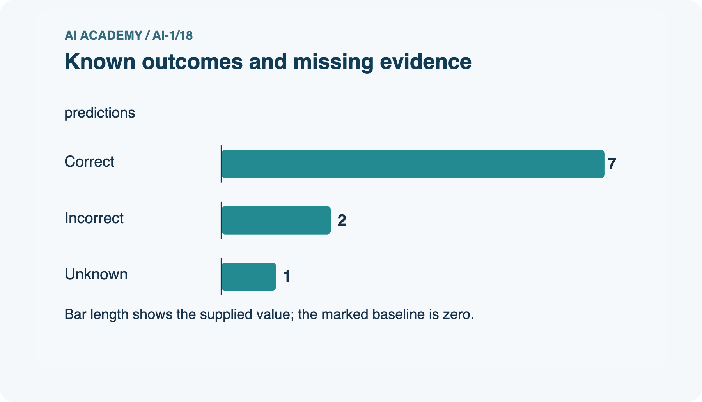
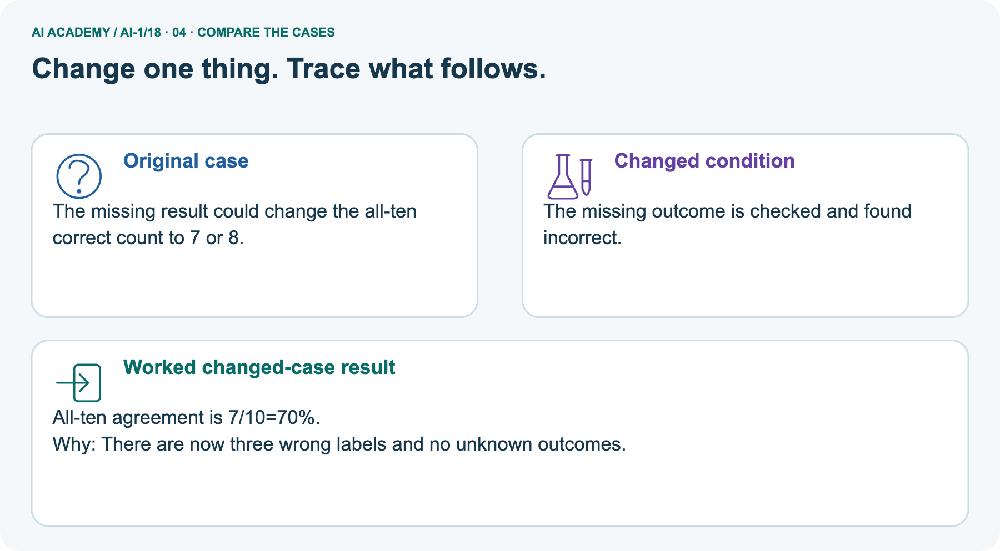
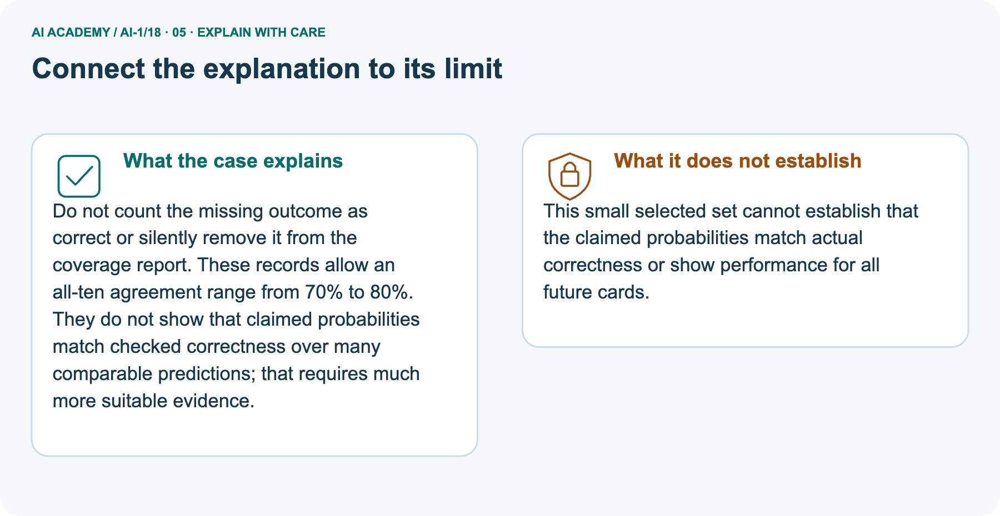
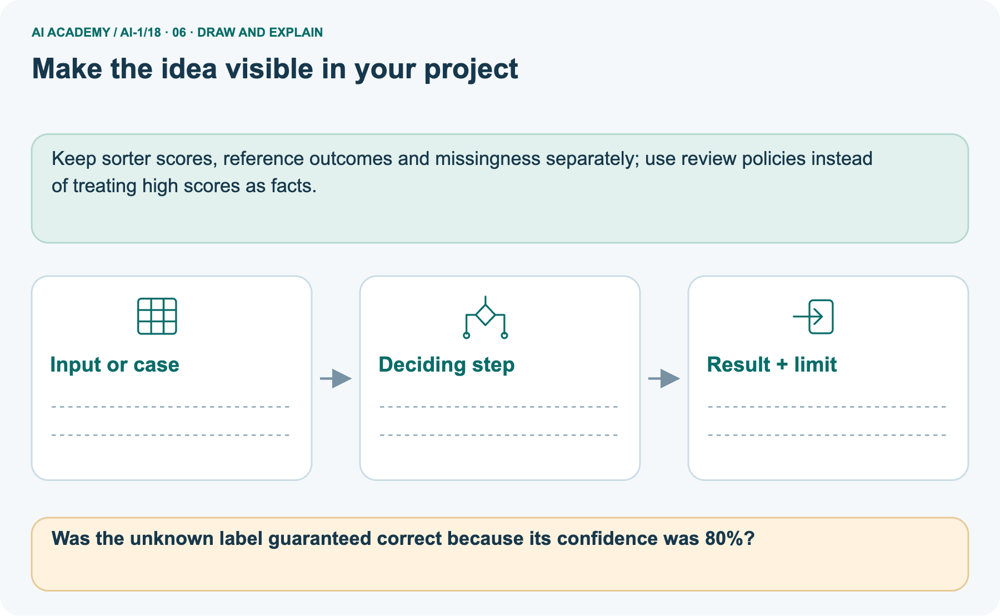

AI Academy · Level 1 · Grade 6 · Week 18 · Workbook
Confidence Is Not Correctness
Learn to understand, design, build, test and explain AI systems responsibly.
Project: Helpful Classroom Sorter
Workbook · 1 of 21
Recall and choose your starting point
Record your starting explanation for Confidence Is Not Correctness before opening notes. Show any later correction separately.
Try the recall before opening notes. Then use a different colour or a labelled second line to correct your explanation.
Prediction Is Not Fact
Without opening the old lesson, explain one key idea from Prediction Is Not Fact. Give an example and a mistake that the idea helps you avoid.
Save New Examples for Testing
Without opening the old lesson, explain one key idea from Save New Examples for Testing. Give an example and a mistake that the idea helps you avoid.
Debug the Cause
Without opening the old lesson, explain one key idea from Debug the Cause. Give an example and a mistake that the idea helps you avoid.
Workbook · 2 of 21
Practise with fading help
Complete the supported Confidence Is Not Correctness trace and record the first step you can explain without help.
Use W2: Judge cases using outcomes for Confidence and correctness. Record the answer once; the lesson and workbook refer to the same attempt.
| Given inputs | Procedure I chose | Middle steps | Result and check |
|---|---|---|---|
Workbook · 3 of 21
Individual reasoning check
Check the proposed Confidence Is Not Correctness explanation against the supplied facts before discussing it.
Use the worked case for Confidence and correctness. Proposed explanation: “An 80 point score always means an 80 percent probability”. Decide whether this explanation is supported.
Point to the step or supplied fact that decides; explain your repair if needed.
Workbook · 4 of 21
Independent transfer case
Write one first attempt at the reserved independent case before feedback. Repeated copies of that case refer to the same recorded attempt.
Independent case: Audit a different probability claim
A fictional leaf sorter claims a 75 percent probability of correctness for each of eight chosen labels. Later evidence establishes six correct labels, one incorrect label and one missing outcome.
A report says six out of eight proves perfect calibration and guarantees the next label. Repair the report, state the assessed and unassessed counts, and describe a better follow-up check.
Attempt this case before feedback. Record any help. Earlier examples below are further practice; a case already practised with feedback cannot establish fresh transfer.
Workbook · 5 of 21
Your learning target
Connect the Confidence Is Not Correctness target to a trace and a justified conclusion.
A helper says 'definitely correct' on four answers; only two match the answer key. A cautious helper gives the same four answers. Which is more accurate? What additional evidence would you need to compare confidence quality?
Workbook · 6 of 21
Solve the given case
Solve the supplied Confidence Is Not Correctness case and show the deciding evidence.
A helper confidently labels a blurred dog photo as cat; the clear original shows a dog.
What does this show?
Show your trace, calculation or evidence
Workbook · 7 of 21
Check a changed case
Apply the procedure to the changed case and record why the conclusion follows.
A sorter is very confident that a leaf is a coin, but a person checks and sees a leaf. Which determines correctness: confidence or the checked object? Why?
My independent answer and reason
Week 18 Test and reflect
Workbook · 8 of 21
Design a revealing test
Specify a changed input, expected result and observation separately.
Create a changed input, boundary case or missing-information case. Write the expected answer or safe response before testing.
| Test record | My evidence |
|---|---|
| Changed input or condition | |
| Expected answer or fallback | |
| Observed result | |
| Why the result occurred |
Workbook · 9 of 21
Project checkpoint
Justify what Confidence Is Not Correctness adds to Helpful Classroom Sorter and keep the evidence.
Record both the sorter's confidence wording and the human-confirmed outcome; keep them in separate columns.
The project change and evidence I will keep
Workbook · 10 of 21
Self check
Judge explanation, evidence, transfer and limits separately; attach the work behind your judgement.
- I can explain the mechanism.
- I can show evidence.
- I can handle a changed case.
- I can name a limit.
Mark each as not yet, with help or independently, and attach supporting work.
Teacher review ____________________ Next step ____________________
Workbook · 11 of 21
Transfer practice from the original programme
Use this earlier case as transfer practice. A case already discussed with feedback is not fresh assessment evidence.
A helper says 'definitely correct' on four answers; only two match the answer key. A cautious helper gives the same four answers. Which is more accurate? What additional evidence would you need to compare confidence quality?
Record support used: none, hint or teacher explanation.
Workbook · 12 of 21
W1 Read the score definition
Read the score definition. Apply the supplied Confidence Is Not Correctness facts and keep your reasoning.
A card sorter gives a match score of 80 out of 100 points. Its documentation says the score counts weighted feature matches and is not a probability. A learner calls this an 80 percent chance of correctness.
Explain the error and write an accurate description.
Workbook · 13 of 21
W2 Judge cases using outcomes
Judge cases using outcomes. Apply the supplied Confidence Is Not Correctness facts and keep your reasoning.
Use cases A, B and C from the lesson table. State which is correct, incorrect and unassessed. Explain why ordering them by confidence cannot replace checking their outcomes.
Workbook · 14 of 21
W3 Interpret a small group carefully
Interpret a small group carefully. Apply the supplied Confidence Is Not Correctness facts and keep your reasoning.
Ten predictions each claim an 80 percent probability that their chosen category is correct. Five later prove correct and five incorrect. State the claimed probability and observed fraction separately.
Does this prove every future prediction will be wrong, or that each next prediction has exactly a 50 percent chance? Explain.
Workbook · 15 of 21
W4 Audit a different probability claim
Attempt before feedback. If this repeats the selected independent case, reuse that first attempt; otherwise keep a separate record. Audit a different probability claim. Apply the supplied Confidence Is Not Correctness facts and keep your reasoning.
A fictional leaf sorter claims a 75 percent probability of correctness for each of eight chosen labels. Later evidence establishes six correct labels, one incorrect label and one missing outcome.
A report says six out of eight proves perfect calibration and guarantees the next label. Repair the report, state the assessed and unassessed counts, and describe a better follow-up check.
Workbook · 16 of 21
W5 Keep repetition separate from evidence
Keep repetition separate from evidence. Apply the supplied Confidence Is Not Correctness facts and keep your reasoning.
A learner copies the same 90 percent prediction into ten rows and calls this ten independent tests. No new outcomes were obtained. Explain why the evidence has not grown and propose a useful check.
Workbook · 17 of 21
Feedback, return check and learning record
Record the first repaired step and a different case to revisit after a delay.
| Evidence | My record |
|---|---|
| Worked alone / hint / model | |
| First step I repaired and why | |
| New case checked later; date and result | |
| What I can now explain without notes | |
| One remaining question |
Revisit this idea with your teacher after a delay. Familiarity is different from explaining and using it on a changed case.
Workbook · 18 of 21
Pictorial case practice: Confidence Is Not Correctness
A fictional card classifier reports a claimed 80% chance that each chosen label is correct. Explain the labelled step before checking the changed condition.
A fictional card classifier reports a claimed 80% chance that each chosen label is correct.
Ten predictions all have score 80%.
Later checks find 7 correct, 2 incorrect and 1 outcome unavailable. The selected cards were not a representative survey.


Was the unknown label guaranteed correct because its confidence was 80%?
Record the help used
Support used: alone / hint / worked example. This record is practice evidence.
Project connection: Keep sorter scores, reference outcomes and missingness separately; use review policies instead of treating high scores as facts.
Workbook · 19 of 21
Project portfolio milestone
Keep this week’s input, deciding step, result and limit together in the Helpful Classroom Sorter record.
Project: Helpful Classroom Sorter
Current milestone: Test changed cases. Keep normal, boundary and failure cases; compare expected and observed results.
Keep sorter scores, reference outcomes and missingness separately; use review policies instead of treating high scores as facts.
| Evidence to keep | My record |
|---|---|
| This week’s input and deciding step | |
| Prediction and actual result (or labelled paper trace) | |
| One change since the previous checkpoint and why | |
| One error or limit and the next test |
Workbook · 20 of 21
Supported practice and learning evidence
Try the supported questions before comparing with hints and feedback. Record what you repaired and the evidence you retained.
Use this supported practice once, in the browser or on paper. Keep the reserved independent assessment for a separate first attempt before teacher feedback.
A fictional card classifier reports a claimed 80% chance that each chosen label is correct.
Practice 1: explain the deciding evidence
Which labelled step matches this detail? The missing result could change the all-ten correct count to 7 or 8.
1. Checked outcomes
2. Report coverage
3. Retain unknown
4. Keep scores
Hint · try first
Hint if needed: Read the steps in the pictorial case. Match the supplied detail to the stage that performs or records it.
Feedback · compare after trying
After your attempt, compare with the supported explanation: Retain unknown The missing result could change the all-ten correct count to 7 or 8.
Do not count the missing outcome as correct or silently remove it from the coverage report. These records allow an all-ten agreement range from 70% to 80%.
They do not show that claimed probabilities match checked correctness over many comparable predictions; that requires much more suitable evidence.
Practice 2: explain the deciding evidence
Changed case · predict first
Changed-case practice: The missing outcome is checked and found incorrect. Which conclusion is supported by the supplied facts?
1. This one example guarantees correct results for every future input.
2. We can decide the result without examining the changed input or the procedure.
3. All-ten agreement is 7/10=70%.
Hint · try first
Hint if needed: Use the changed condition and the deciding step in the pictorial trace. The answer must say what follows from those facts.
Feedback · compare after trying
After your attempt, compare with the supported explanation: All-ten agreement is 7/10=70%. There are now three wrong labels and no unknown outcomes.
Repair a missing building block
Review Prediction Is Not Fact (ai-1/17). Goal: Separate a recorded prediction from the observation used to check it. Short practice: Which field changes the observation label, and which field changes the model prediction?.
Return to this week and explain what you changed.
Review Save New Examples for Testing (ai-1/15). Goal: Separate examples used to choose a model from examples reserved for its final evaluation. Short practice: Does 4/4 on the replay replace the original 3/4 result? Explain..
Return to this week and explain what you changed.
Review Debug the Cause (ai-1/12). Goal: Compare expected and observed traces to locate the first difference. Short practice: Propose input 0 and give both predicted outputs without inventing an observed result..
Return to this week and explain what you changed.
Keep your completed work
Use Download completed work in the hosted lesson to export your answers, reflections, practice feedback and code-run evidence. Open the HTML copy to read or print it.
Drafts stay in this browser when storage is available; clear drafts on a shared device.
Workbook · 21 of 21
Visual concept journey
Explain each Confidence Is Not Correctness picture from its labels, then record a relevant limit.
01. Confidence Is Not Correctness: the case

A fictional card classifier reports a claimed 80% chance that each chosen label is correct. Supplied facts: Ten predictions all have score 80%. Later checks find 7 correct, 2 incorrect and 1 outcome unavailable.
The selected cards were not a representative survey.
Point to the given fact that matters most. Explain why it matters.
02. Follow the deciding steps

Keep scores: Ten chosen labels each carry 80%; this is a claim about uncertainty. → Checked outcomes: Seven correct plus two wrong gives nine known outcomes. → Report coverage: Observed agreement is 7/9 among checked cards; outcome coverage is 9/10. → Retain unknown: The missing result could change the all-ten correct count to 7 or 8.
Point to each numbered stage and explain which recorded input it uses.
03. Known outcomes and missing evidence

Known outcomes and missing evidence. Units: predictions. Correct: 7. Incorrect: 2. Unknown: 1.
Read the labels and values. Explain the relationship the model shows.
04. Change one thing. Trace what follows.

Original case: The missing result could change the all-ten correct count to 7 or 8. Changed condition: The missing outcome is checked and found incorrect. Expected result: All-ten agreement is 7/10=70%.
Reason: There are now three wrong labels and no unknown outcomes.
Predict before checking the worked changed-case result. Name what changed and what the supplied facts allow you to conclude.
05. Connect the explanation to its limit

Do not count the missing outcome as correct or silently remove it from the coverage report. These records allow an all-ten agreement range from 70% to 80%.
They do not show that claimed probabilities match checked correctness over many comparable predictions; that requires much more suitable evidence.
Limit: This small selected set cannot establish that the claimed probabilities match actual correctness or show performance for all future cards.
Explain the case, then point to a limit on the claim.
06. Make the idea visible in your project

Keep sorter scores, reference outcomes and missingness separately; use review policies instead of treating high scores as facts. Draw your input, deciding step, result and limit.
Supported question: Was the unknown label guaranteed correct because its confidence was 80%?
Draw your project trace and justify the deciding step using evidence.